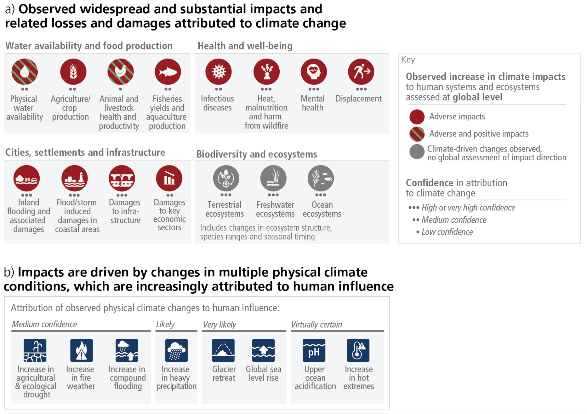
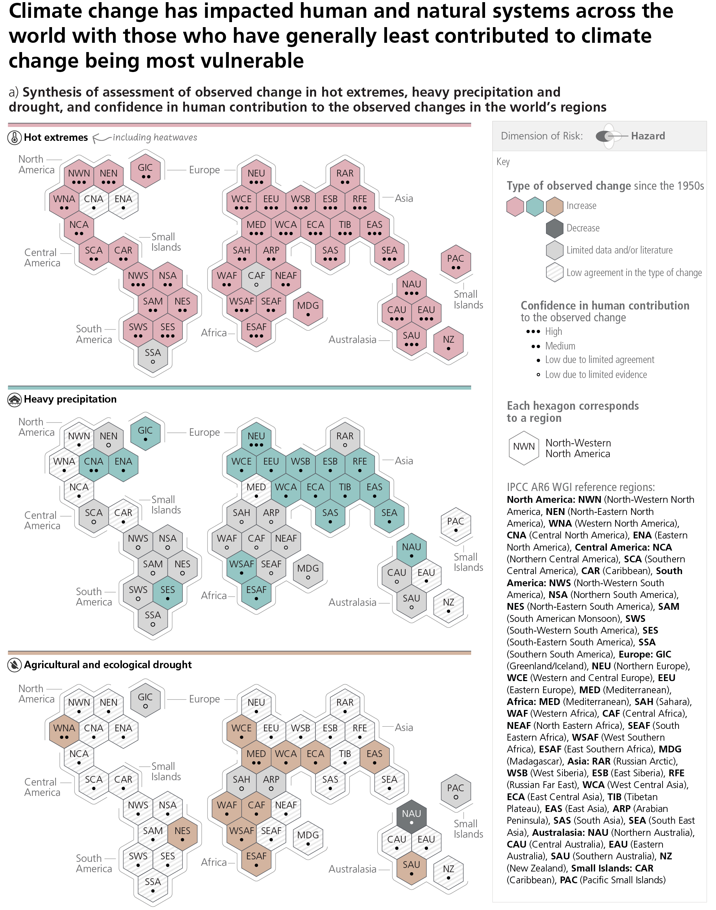
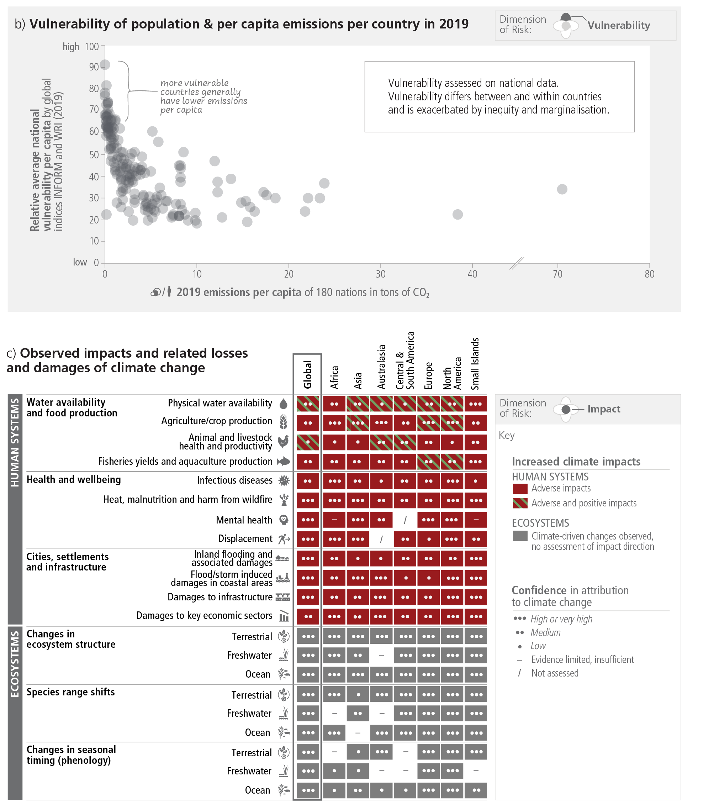
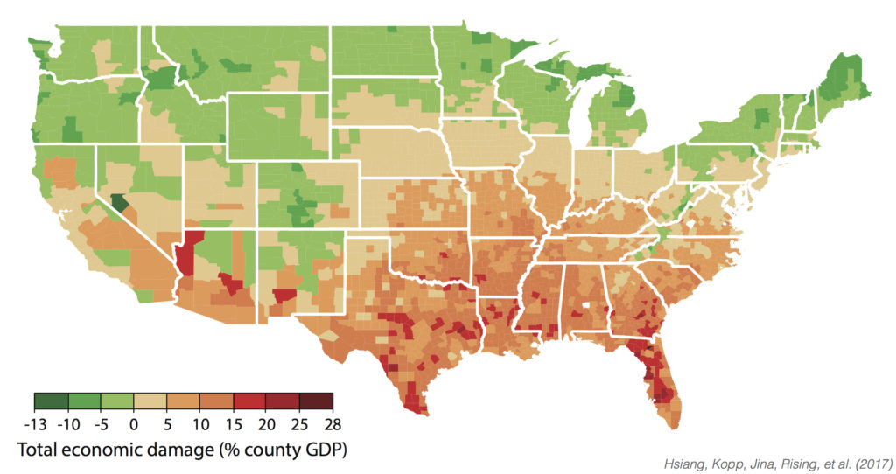
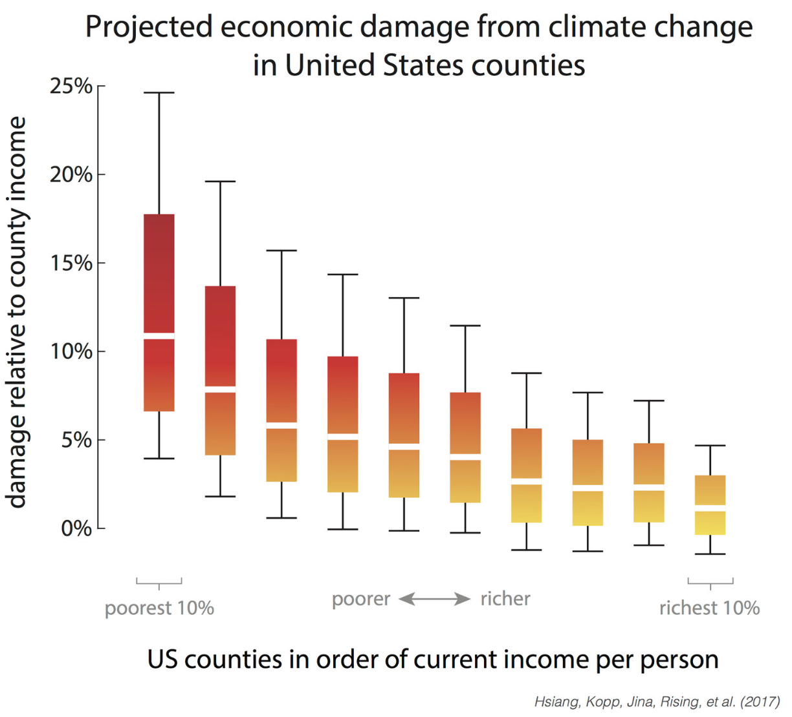
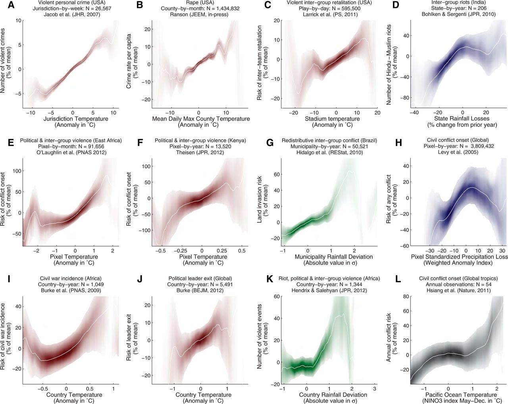
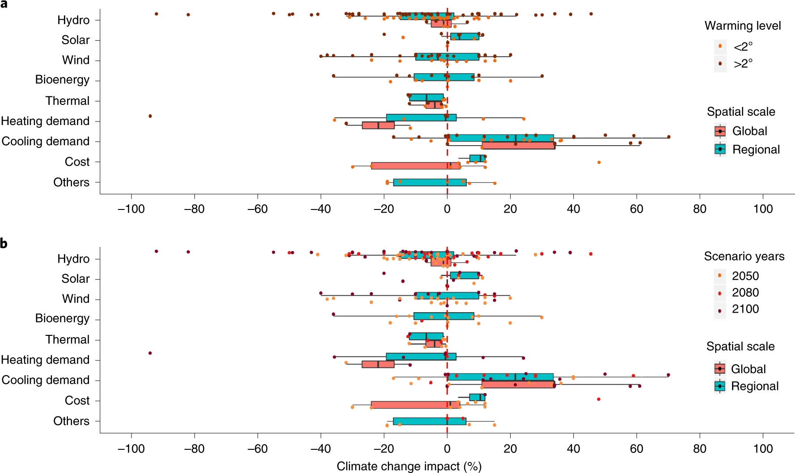
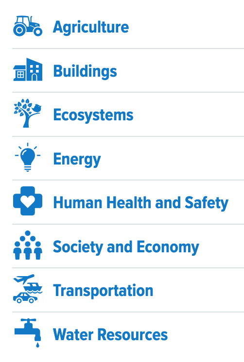

Lecture 4 Climate Impacts
A five points “climate haiku”
- It’s warming
- It’s us
- We’re sure
- It’s bad
- We can fix it

Adverse impacts of climate change

The impacts are global

Vulnerable population suffers more

Conventional focues
- Ice melting
- Sea level rising
- Extreme weathers
- Floods
- Droughts
Damages to include
- agriculture
- mortality
- energy
- low-risk labor
- high-risk labor
- coastal damages
- property crime
- violent crime
What other damages to include?
U.S. southern states suffer more

The poor will get damages more

Climate damage function
\(Economic\ Damage=f(\Delta temperature)\)
- It could be negative or positive
- Integrated Assessment Models/Economic models
- DICE/RICE
- FUND
- PAGE
Climate change and conflicts

Climate change affects energy system

Climate impact to renewable supply-demand match

NYS climate impacts assessment
- Up-to-date projections of future climate conditions in New York State
- Sector-based literature reviews
- In-depth economic impact assessments
- A peer-reviewed technical report that conveys scientific findings
- Summaries and syntheses for a wider audience
- Adaptation strategies and case studies
- Links and references to primary sources for full transparency

An ongoing effort, anything missing?
Fuel for thoughts: grand challenges, huge progress, and grand opportunities

References
Hsiang, Solomon M., Marshall Burke, and Edward Miguel. 2013. “Quantifying the Influence of Climate on Human Conflict.” Science, August. https://doi.org/10.1126/science.1235367.
Hsiang, Solomon, Robert Kopp, Amir Jina, James Rising, Michael Delgado, Shashank Mohan, D. J. Rasmussen, et al. 2017. “Estimating Economic Damage from Climate Change in the United States.” Science 356 (6345): 1362–69. https://doi.org/10.1126/science.aal4369.
Liu, Laibao, Gang He, Mengxi Wu, Gang Liu, Haoran Zhang, Ying Chen, Jiashu Shen, and Shuangcheng Li. 2023. “Climate Change Impacts on Planned Supply–Demand Match in Global Wind and Solar Energy Systems.” Nature Energy 8 (8): 870–80. https://doi.org/10.1038/s41560-023-01304-w.
Neumann, James E., Jacqueline Willwerth, Jeremy Martinich, James McFarland, Marcus C. Sarofim, and Gary Yohe. 2020. “Climate Damage Functions for Estimating the Economic Impacts of Climate Change in the United States.” Review of Environmental Economics and Policy 14 (1): 25–43. https://doi.org/10.1093/reep/rez021.
Valuing Climate Changes: Updating Estimation of the Social Cost of Carbon Dioxide. 2017. Washington, D.C.: National Academies Press. https://doi.org/10.17226/24651.
Yalew, Seleshi G, Michelle TH van Vliet, David EHJ Gernaat, Fulco Ludwig, Ariel Miara, Chan Park, Edward Byers, et al. 2020. “Impacts of Climate Change on Energy Systems in Global and Regional Scenarios.” Nature Energy 5 (10): 794–802. https://doi.org/10.1038/s41560-020-0664-z.
Social economic impacts
Source: Carleton and Hsiang (2016)